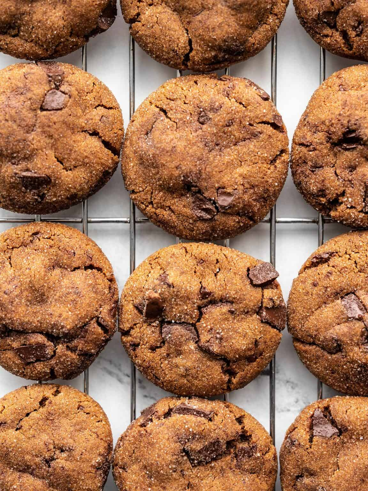

Chocolate Molasses Cookies

Not only is the sweetness not super over the top, but the warm spices and semi-sweet chocolate give the cookie a little kick that helps counteract the sweetness. The flavor combination is absolute heaven!
Ingredients
- 1.5 cups all-purpose flour
- 1.25 tsp ground ginger
- 1/4 tsp ground cloves
- 1/4 tsp ground nutmeg
- 1 Tbsp unsweetened cocoa powder
- 1 tsp baking powder
- 8 Tbsp butter, room temperature
- 1 Tbsp fresh grated ginger
- 1/2 cup brown sugar
- 1/2 cup molasses
- 4 oz. semi-sweet chocolate
- 1/4 cup granulated sugar
Recipe instructions
- Add the flour, ground ginger, cloves, nutmeg, coocoa powder, and baking powder to a bowl and stir until well combined.
- To a separate bowl, add the butter, fresh ginger, brown sugar, and molasses. use a mixer to beat these ingredients together until light and creamy.
- Begin adding the flour mixture into the molasses mixture, ½ cup at a time, beating at low speed, until all of the flour mixture has been incorporated.
- Roughly chop the chocolate, then stir it into the cookie dough. Wrap the cookie dough in plastic, then refrigerate for at least one hour.
- When you're ready to bake the cookies, preheat the oven to 325ºF. Place the granulated sugar in a small bowl. Divide the cookie dough into four equal-sized pieces, then divide each of the quarters into six small pieces to make 24 total cookies.
- Add the cooked and drained pasta to the pot with the cheese sauce and stir to combine. Serve the mac and cheese hot and enjoy!
- Roll each piece of cookie dough into a ball, then roll the dough ball in the granulated sugar to coat. Place the shaped cookies on a parchment-lined baking sheet, 12 per baking sheet.
- Bake the cookies for about 12 minutes in the 325ºF oven, or until they're slightly cracked on top. Transfer the cookies to a cooling rack. Enjoy warm or at room temperature.
Return to the main page